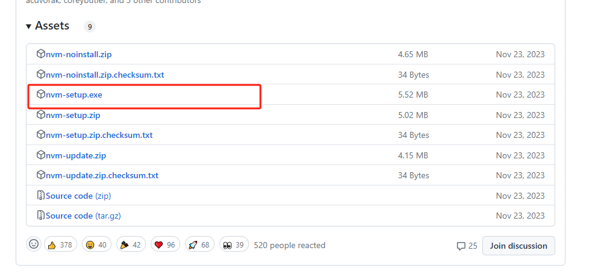

# 下载地址：
https://github.com/coreybutler/nvm-windows/releases

就正常的傻瓜式安装（注意：如果默认安装在 C 盘，则无需配置环境变量）
检测安装是否成功：
正常出现版本号则表示安装成功
# 配置环境变量：
圈出来的地方改成自己安装的对应路径即可
# 配置镜像源
找到 nvm 文件位置，点开 setting
输入下面的镜像源
node_mirror: https://npm.taobao.org/mirrors/node/
npm_mirror: https://npm.taobao.org/mirrors/npm/
# 使用
1. 先卸载之前的 node.js
2. 在刚刚的 nvm 文件位置打开 cmd
3. 输入以下代码查看 nvm 可安装的 node 版本
nvm ls // 看安装的所有node.js的版本
nvm list available // 查显示可以安装的所有node.js的版本
4. 安装所对应的版本
nvm install 版本号 // 例如：nvm install 14.19.0
5. 切换到安装的版本
nvm use 版本号 // 切换到使用指定的nodejs版本